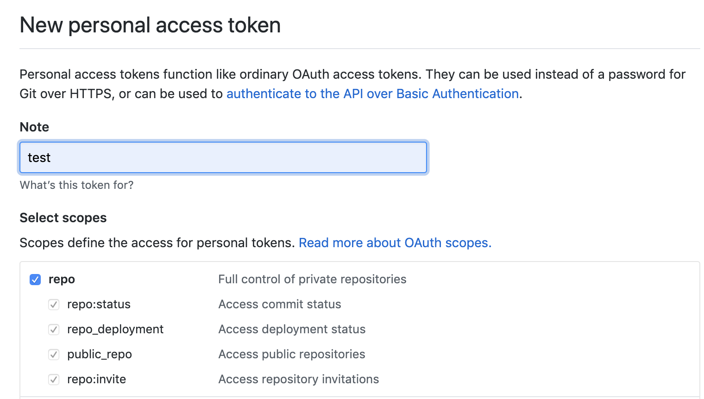

洛阳城东桃李花，飞来飞去落谁家？洛阳女儿惜颜色，坐见落花长叹息。今年花落颜色改，明年花开复谁在？已见松柏摧为薪，更闻桑田变成海。古人无复洛城东，今人还对落花风。年年岁岁花相似，岁岁年年人不同。寄言全盛红颜子，应怜半死白头翁。此翁白头真可怜，伊昔红颜美少年。公子王孙芳树下，清歌妙舞落花前。光禄池台文锦绣，将军楼阁画神仙。一朝卧病无相识，三春行乐在谁边？宛转蛾眉能几时？须臾鹤发乱如丝。但看古来歌舞地，唯有黄昏鸟雀悲。 —— 唐·刘希夷 《代悲白头翁》
搭建博客
- 安装hexo
- 生成SSH key并添加到github
- 初始化项目
hexo init blog(名字随便) - 安装所需依赖
npm install- 安装慢：参考
- npm config set registry https://npmmirror.com/
- npm config set registry https://registry.npmmirror.com/
- npm install –registry=https://registry.npm.taobao.org/
- npm error Exit handler never called!
- npm error This is an error with npm itself. Please report this error at:
- npm error https://github.com/npm/cli/issues
- npm error A complete log of this run can be found in: C:\Users\Administrator\AppData\Local\npm-cache_logs\2025-04-12T08_57_22_482Z-debug-0.log
- 还是不行，还原官方源
- npm config set registry https://registry.npmjs.org
- npm cache clean –force
- npm install -g cnpm –registry=https://registry.npm.taobao.org
- 还是不行
- 设置代理：
- npm config set proxy http://127.0.0.1:7890
- npm config set https-proxy http://127.0.0.1:7890
- npm config delete proxy https-proxy
- npm install –force，还是不行
- npm config list –json
- attempt 3 failed with CERT_HAS_EXPIRED
- npm config set strict-ssl false
- npm config set strict-ssl true
- attempt 3 failed with ENOTFOUND
- npm config set registry http://registry.cnpmjs.org/
- npm cache clean –force
- npm config set https-proxy http://127.0.0.1:7890
- npm config set proxy http://127.0.0.1:7890
- npm config set registry=”https://registry.npmmirror.com"
- 查看hexo版本：5.4，查看hexo文档，发现是nodejs版本不对，没试升级这种情况
- npm install -g –unsafe-perm hexo-cli，解决
- rm node_modules && npm install –force
- 安装发布工具
npm install hexo-deployer-git --save - 编辑博客内容(markdown语法自行脑补)
- 上传到github
hexo g -d - 绑定个人域名(CNAME)
- 更换主题、增加搜索、底部增加访问量等都是在配置文件里搞搞
修改主题
- 进入博客主题目录
cd 博客/themes - 克隆主题文件
git clone https://github.com/theme-next/hexo-theme-next.git - 修改主配置文件
_config.yml
1 | # Extensions |
- 修改主题配置文件，next主题下有四种风格类型的，根据个人爱好开启
1 | # Schemes |
修改icon
将选好的icon图片放到目录
博客目录/themes/hexo-theme-next/source/images修改对应主题的配置文件
_config.yml
1 | favicon: |
添加标签、分类
- 添加分类
hexo new page categories - 添加标签
hexo new page tags - 新建文章的时候指定分类和标签
1 | categories: |
- 添加关于
hexo new page about
设置域名访问
- 进入source目录
cd 博客目录/source - 输出域名到CNAME
echo liusir.me > CNAME - 登录阿里后台，解析域名
- 记录类型默认选择A-将域名指向一个IPV4地址
ping liusirdotme.github.io拿到ip填入记录值
网站地址
npm install hexo-generator-sitemap --save
添加algolia搜索后，修改博客名称经常会出现重复的搜索项，点开后会报404错误
- 删除本地.deploy_git目录
- 登录algolia，清除索引
- 重新生成
hexo algolia
博客插入图片
- 修改主配置
post_asset_folder: true - 安装插件
npm install hexo-asset-image --save - 将图片放入和博客文件同名的文件夹下，使用markdown语法引入即可
- 推送前先清理下缓存
hexo clean
- 推送前先清理下缓存
Next主题字数统计
- 进入博客根目录，安装插件
npm install hexo-symbols-count-time --save - 打开主配置文件
1 | symbols_count_time: |
- 打开主题配置文件
1 | symbols_count_time: |
- 重新发布下博客，打完收工
添加fork me on GitHub
- 选取样式
- 修改
blog\themes\next\layout\_layout.swig
1 | <div class="{{ container_class }} {% block page_class %}{% endblock %} "> |
- 位置
<div class="headband"></div>下一行 - github地址改成对应自己的
- 小屏幕不显示fork me on github
- 修改
blog\themes\next\layout\_layout.swig
- 修改
1 | <head> |
去步骤2，嵌套一个div
1
2
3<div class="forkme">
<a target="_blank" href="https://github.com/yourname"></a>
</div>
添加动漫
- 安装插件
npm install --save hexo-helper-live2d - 修稿主题配置文件_config.yml，添加以下内容
1 | live2d: |
参考
https://github.com/EYHN/hexo-helper-live2dhttps://github.com/xiazeyu/live2d-widget-models
动漫选择
- live2d-widget-model-chitose
- live2d-widget-model-epsilon2_1
- live2d-widget-model-gf
- live2d-widget-model-haru_01
- live2d-widget-model-haru_02
- live2d-widget-model-haruto
- live2d-widget-model-hibiki
- live2d-widget-model-hijiki
- live2d-widget-model-izumi
- live2d-widget-model-koharu
- live2d-widget-model-miku
- live2d-widget-model-nico
- live2d-widget-model-nietzsche
- live2d-widget-model-ni-j
- live2d-widget-model-nipsilon
- live2d-widget-model-nito
- live2d-widget-model-shizuku
- live2d-widget-model-tororo
- live2d-widget-model-tsumiki
- live2d-widget-model-unitychan
- live2d-widget-model-wanko
- live2d-widget-model-z16
BZ发现不蒜子统计总是不起作用，偶尔去翻next主题issue的时候，看到作者说是live2d影响了统计，这就尴尬了
- 卸载live2d
npm uninstall hexo-helper-live2d - 修改主题配置文件
1
2
3
4
5
6
7
8
9
10
11
12
13
14
15
16
17
18live2d:
enable: false # change here to false
scriptFrom: local
pluginRootPath: live2dw/
pluginJsPath: lib/
pluginModelPath: assets/
tagMode: false
log: false
model:
use: live2d-widget-model-wanko
display:
position: right
width: 50
height: 150
mobile:
show: false
react:
opacity: 0.7- 重新生成并发布
- 卸载live2d
常见问题
- 标题不要有中括号，如
[热]门，否则hexo g时会报错 - 文章内容不要连着写
{和#，如shell中求数组长度就是连着写的 - 大小写问题
- 进入博客
.deploy_git目录 - 设置区分大小写
git config core.ignorecase false - 重新发布就OK了
- 进入博客
next主题hexo generate慢的出奇
一、环境配置
- Node.js & npm version
1 | node -v |
- 主配置文件
_config.yml
1 | # Hexo Configuration |
- 主题配置文件
_config.yml
1 | # --------------------------------------------------------------- |
- Hexo插件列表(
npm ls --depth 0)
1 | hexo-site@0.0.0 /Users/liuyulong/liusir.me |
- package.json
1 | { |
hexo algolia报错：Record at the position 3 objectID=xxx is too big size
- hexo博客添加algolia搜索，每次更新博客后都要执行已给hexo algolia命令以同步更新algoliasearch，某天突然报错了：
1 | INFO [hexo-algolia] 552 records to index (post, page). |
错误原因：每次更新完博客后，执行完hexo algolia命令后，默认的js方法会将标题、简要等信息推送到algolia，推送信息的大小是有限制的。
解决方法
- 修改
/blog path/node_modules/hexo-algolia/lib/command.js - 找到以下内容
- 修改
1 | var INDEXED_PROPERTIES = [ |
- 根据个人情况选择注释一部分就行了，如：
1 | var INDEXED_PROPERTIES = [ |
基于TravisCI实现hexo博客持续继承
一、Travis CI
- 持续集成CI(Continuous Integration)，一种自动编译和发布代码的技术。
- Travis CI是在线托管的CI服务，用Travis来进行持续集成，不需要自己搭服务器，在网页上点几下就好，用起来更方便。它对开源项目是免费的，并且与Github实现了无缝衔接。
二、原理
三、开始实现(https://www.travis-ci.com/)
github上有两个仓库，其中public的库就是当前博客的静态文件库，private是博客源文件，即md文件。
登录博客所在的Github账号，生成
access tokens，在https://github.com/settings/tokens->Personal access tokens
通过Github授权登录Travis CI官网
| 版本 | 主页 | 特色 |
|---|---|---|
| 免费版 | https://travis-ci.org/ | 为开源项目提供免费服务 |
| 收费版 | https://travis-ci.com/ | 可以部署 GitHub 私有仓库 |
将Github生成的access token添加至Travis CI
- 操作步骤为
More options>Setting>Environment Variables - Name随便(下面
.travis.yml文件会用到)，Value是Github生成的access token，其余默认即可，最后点击Add按钮
- 操作步骤为
回到本地博客目录，添加
.travis.yml文件，并加入以下配置信息，具体根据自己情况而定
1 | # 指定语言环境 |
- 修改本地md文件，推送到github，查看页面是否同步更改。也可在TravisCI后台看到，
Running部分。
使用以上方法，每次都要clone的主题，这样导致本地主题的配置无法使用。
可以在脚本执行那儿把本地的配置复制一份过去，换成scheme: Pisces，不过这样导致的结果是generate时运行超时，即超过10min没有输出任务就自动退出了。当然也可以通过写一个脚本，让任务持续输出，感觉好麻烦，还是在本地generate。
四、参考
添加自定义友链页面
一、步骤
新增links页面
hexo new page links- 在博客根目录
/source下会生成一个links文件夹，打开其中的index.md文件，在头部写入type: links，这个一定要写
- 在博客根目录
主题配置文件中menu下添加：
links: /links/ || link在
/themes/next/languages/zh-Hans.yml文件中menu下增加中文描述links: 友链，即把英文转为中文修改模板
- 在
/themes/next/layout/新建links.swig，内容如下： - mac下样式还行，Window大屏幕下有点儿变形，修改
width: 300px;为width: 30%;
1
2
3
4
5
6
7
8
9
10
11
12
13
14
15
16
17
18
19
20
21
22
23
24
25
26
27
28
29
30
31
32
33
34
35
36
37
38
39
40
41
42
43
44
45
46
47
48
49
50
51
52
53
54
55
56
57
58
59
60
61
62
63
64
65
66
67
68
69
70
71
72
73
74
75
76
77
78
79
80
81
82
83
84
85
86
87
88
89
90
91
92
93
94
95
96
97
98
99
100
101
102
103
104{% block content %}
{######################}
{### LINKS BLOCK ###}
{######################}
<div id="links">
<style>
#links{
margin-top: 5rem;
}
.links-content{
margin-top:1rem;
}
.link-navigation::after {
content: " ";
display: block;
clear: both;
}
.card {
width: 300px;
font-size: 1rem;
padding: 10px 20px;
border-radius: 4px;
transition-duration: 0.15s;
margin-bottom: 1rem;
display:flex;
}
.card:nth-child(odd) {
float: left;
}
.card:nth-child(even) {
float: right;
}
.card:hover {
transform: scale(1.1);
box-shadow: 0 2px 6px 0 rgba(0, 0, 0, 0.12), 0 0 6px 0 rgba(0, 0, 0, 0.04);
}
.card a {
border:none;
}
.card .ava {
width: 3rem!important;
height: 3rem!important;
margin:0!important;
margin-right: 1em!important;
border-radius:4px;
}
.card .card-header {
font-style: italic;
overflow: hidden;
width: 236px;
}
.card .card-header a {
font-style: normal;
color: #2bbc8a;
font-weight: bold;
text-decoration: none;
}
.card .card-header a:hover {
color: #d480aa;
text-decoration: none;
}
.card .card-header .info {
font-style:normal;
color:#a3a3a3;
font-size:14px;
min-width: 0;
text-overflow: ellipsis;
overflow: hidden;
white-space: nowrap;
}
</style>
<div class="links-content">
<div class="link-navigation">
{% for link in theme.mylinks %}
<div class="card">
<img class="ava" src="{{ link.avatar }}"/>
<div class="card-header">
<div>
<a href="{{ link.site }}" target="_blank"> {{ link.nickname }}</a>
<a href="{{ link.site }}" target="_blank"><span class="focus-links">关注</span></a>
</div>
<div class="info">{{ link.info }}</div>
</div>
</div>
{% endfor %}
</div>
{{ page.content }}
</div>
</div>
{##########################}
{### END LINKS BLOCK ###}
{##########################}
{% endblock %}修改
/themes/next/layout/page.swig文件block title部分加入以下代码：
1
2
3
4
5
6
7
8
9
10
11
12
13
14
15{% block title %}
{%- set page_title_suffix = ' | ' + title %}
{%- if page.type === 'categories' and not page.title %}
{{- __('title.category') + page_title_suffix }}
{%- elif page.type === 'tags' and not page.title %}
{{- __('title.tag') + page_title_suffix }}
<!-- 友情链接-->
{%- elif page.type === 'links' and not page.title %}
{{- __('title.links') + page_title_suffix }}
{%- elif page.type === 'schedule' and not page.title %}
{{- __('title.schedule') + page_title_suffix }}
{%- else %}
{{- page.title + page_title_suffix }}
{%- endif %}
{% endblock %}PAGE BODY
1
2
3
4
5
6
7
8
9
10
11
12{% elif page.type === 'categories' %}
<div class="category-all-page">
<div class="category-all-title">
{{ _p('counter.categories', site.categories.length) }}
</div>
<div class="category-all">
{{ list_categories() }}
</div>
</div>
{% elif page.type === 'links' %}
{% include 'links.swig' %}
- 在
在主题的配置文件_config.yml下配置友链，如：
1 | mylinks: |
二、参考
开启评论功能
一、介绍
- 可用的评论系统
- HyperComments：https://www.hypercomments.com （来自俄罗斯的评论系统，使用谷歌账号注册。可以访问，不会用，好气，，）
- 来必力：https://livere.com （来自韩国，使用邮箱注册。）
- 畅言： http://changyan.kuaizhan.com （安装需要备案号。不太好用。）
- Gitment： https://github.com/imsun/gitment （有点小bug，比如说每次需要手动初始化，登录时会跳到主页。。）
- Valine: https://github.com/xCss/Valine (基于Leancloud的极简风评论系统，用了下，没效果，是我Next主题的原因还是？）
二、开干(使用来必力)
- 去来必力官网注册并登录
- 选择导航栏的安装，选择City免费版
- 申请
- 拿到data-uid
去博客主题目录，修改配置文件：
livere_uid: data-uid打完收工
加入豆瓣电影读书等
一、步骤(Next主题)
新增电影导航栏
hexo new page movies- 修改主题下配置文件_config.yml，新增movies项，具体语法见配置说明
1
2
3
4
5
6
7
8menu:
home: / || home
about: /about/ || user
tags: /tags/ || tags
categories: /categories/ || th
archives: /archives/ || archive
movies: /movies/ || film
links: /links/ || link- 修改
themes/next/languages/zh-CN.yml
1
2
3
4
5
6
7
8
9
10
11
12
13menu:
home: 首页
archives: 归档
categories: 分类
tags: 标签
about: 关于
search: 搜索
schedule: 日程表
sitemap: 站点地图
commonweal: 公益 404
music: 音乐
movies: 电影
links: 友链安装插件
npm install hexo-douban-card --save编辑
source/movies/index.md
1 | {% douban movie 24745500 %} |
hexo s，正常情况下就可以预览了
二、报错
- unknown path
1 | FATAL { |
跟着官网来操作的，正常不应该出错的，唯一的可能就是版本问题
升级hexo，然后重新初始化一个空的博客，选择next主题，一顿操作下来还是同样的问题
1
2
3
4
5
6
7
8
9
10
11
12
13
14
15
16
17
18
19hexo: 5.4.0
hexo-cli: 4.3.0
os: darwin 19.6.0 10.15.7
node: 16.6.0
v8: 9.2.230.21-node.18
uv: 1.42.0
zlib: 1.2.11
brotli: 1.0.9
ares: 1.17.1
modules: 93
nghttp2: 1.44.0
napi: 8
llhttp: 6.0.2
openssl: 1.1.1k
cldr: 39.0
icu: 69.1
tz: 2021a
unicode: 13.0既然我遇到了，别人肯定也遇到了，查看官网issue，没有报这个错的
查看官方演示案例，评论区有跟我情况一样的
issues，一路跟过去可以发现是渲染器的问题，具体使用地方见
node_modules/hexo-douban-card/index.jsnpm install nunjucks --savenpm list --depth=01
2
3
4
5
6
7
8
9
10
11
12
13
14
15
16
17
18
19
20
21
22hexo-site@0.0.0 /your_path/blog
├── hexo-algolia@1.3.1
├── hexo-deployer-git@3.0.0
├── hexo-douban-card@1.2.2
├── hexo-generator-archive@0.1.5
├── hexo-generator-category@0.1.3
├── hexo-generator-index-pin-top@0.2.2
├── hexo-generator-searchdb@1.1.0
├── hexo-generator-sitemap@2.0.0
├── hexo-generator-tag@0.2.0
├── hexo-renderer-ejs@0.3.1
├── hexo-renderer-marked@2.0.0
├── hexo-renderer-stylus@0.3.3
├── hexo-server@0.3.3
├── hexo-symbols-count-time@0.6.3
├── hexo-tag-aplayer@2.0.7
├── hexo-tag-cloud@1.0.1
├── hexo-wordcount@6.0.1
├── hexo@5.4.0
├── live2d-widget-model-izumi@1.0.5
├── lodash@4.17.21
└── nunjucks@3.2.3hexo s，依然包错，卸载重新安装npm uninstall nunjucksnpm install nunjucks@2.4.2 --save1
2
3
4
5
6
7
8
9
10
11
12
13
14
15
16
17
18
19
20
21
22hexo-site@0.0.0 /your_path/blog
├── hexo-algolia@1.3.1
├── hexo-deployer-git@3.0.0
├── hexo-douban-card@1.2.2
├── hexo-generator-archive@0.1.5
├── hexo-generator-category@0.1.3
├── hexo-generator-index-pin-top@0.2.2
├── hexo-generator-searchdb@1.1.0
├── hexo-generator-sitemap@2.0.0
├── hexo-generator-tag@0.2.0
├── hexo-renderer-ejs@0.3.1
├── hexo-renderer-marked@2.0.0
├── hexo-renderer-stylus@0.3.3
├── hexo-server@0.3.3
├── hexo-symbols-count-time@0.6.3
├── hexo-tag-aplayer@2.0.7
├── hexo-tag-cloud@1.0.1
├── hexo-wordcount@6.0.1
├── hexo@5.4.0
├── live2d-widget-model-izumi@1.0.5
├── lodash@4.17.21
└── nunjucks@2.4.21
2
3Unhandled rejection Template render error: (/your_path/blog/themes/next/layout/index.swig)
Template render error: (your_path/themes/next/layout/_layout.swig) [Line 32, Column 37]
unexpected token: =npm update nunjucks1
2
3
4
5
6
7
8
9
10
11
12
13
14
15
16
17
18
19
20
21
22hexo-site@0.0.0 /your_path/blog
├── hexo-algolia@1.3.1
├── hexo-deployer-git@3.0.0
├── hexo-douban-card@1.2.2
├── hexo-generator-archive@0.1.5
├── hexo-generator-category@0.1.3
├── hexo-generator-index-pin-top@0.2.2
├── hexo-generator-searchdb@1.1.0
├── hexo-generator-sitemap@2.0.0
├── hexo-generator-tag@0.2.0
├── hexo-renderer-ejs@0.3.1
├── hexo-renderer-marked@2.0.0
├── hexo-renderer-stylus@0.3.3
├── hexo-server@0.3.3
├── hexo-symbols-count-time@0.6.3
├── hexo-tag-aplayer@2.0.7
├── hexo-tag-cloud@1.0.1
├── hexo-wordcount@6.0.1
├── hexo@5.4.0
├── live2d-widget-model-izumi@1.0.5
├── lodash@4.17.21
└── nunjucks@2.5.21
2
3Unhandled rejection Template render error: (/your_path/blog/themes/next/layout/index.swig)
Template render error: (/your_path/blog/themes/next/layout/index.swig)
Template render error: (/your_path/blog/themes/next/layout/index.swig) [Line 8, Column 10]npm uninstall nunjucksnpm install nunjucks --save1
2
3
4
5
6
7
8
9
10
11
12
13
14
15
16
17
18
19
20
21
22hexo-site@0.0.0 /your_path/blog
├── hexo-algolia@1.3.1
├── hexo-deployer-git@3.0.0
├── hexo-douban-card@1.2.2
├── hexo-generator-archive@0.1.5
├── hexo-generator-category@0.1.3
├── hexo-generator-index-pin-top@0.2.2
├── hexo-generator-searchdb@1.1.0
├── hexo-generator-sitemap@2.0.0
├── hexo-generator-tag@0.2.0
├── hexo-renderer-ejs@0.3.1
├── hexo-renderer-marked@2.0.0
├── hexo-renderer-stylus@0.3.3
├── hexo-server@0.3.3
├── hexo-symbols-count-time@0.6.3
├── hexo-tag-aplayer@2.0.7
├── hexo-tag-cloud@1.0.1
├── hexo-wordcount@6.0.1
├── hexo@5.4.0
├── live2d-widget-model-izumi@1.0.5
├── lodash@4.17.21
└── nunjucks@3.2.3一顿操作下来好了，不过是临时性的，下次再用还是会报错
尝试
npm cache clean --force
- 新初始化一个目录则可以，大概是装的插件太多了，有冲突的地方
- hexo init newBlod
- cd newBlod
- git clone https://github.com/theme-next/hexo-symbols-count-time.git ./theme/next
- 改配置
- 安装
- npm install hexo-douban-card –save
- npm install nunjucks –save
- 编辑md文件
hexo s预览
三、参考
Godaddy解析域名
一、背景
二、操作
- 域名转入转出，过程省略
- Godaddy解析域名
- 登入Godaddy账号
- 点击liusir.me连接，进入
https://dcc.godaddy.com/control/liusir.me/settings - 页面往下翻，找到其他设置，点击管理DNS
- 在管理界面添加记录
- 添加类型A记录
- 类型：
A - 主机：
@ - 指向：
185.199.111.153，可通过ping xxx.github.io获得，如ping liusirdotme.github.io
- 类型：
- 添加CNAME记录，用来www访问
- 类型：
CNAME - 主机：
www - 指向：
liusirdotme.github.io
- 类型：
- 添加类型A记录
三、参考
next主题添加不蒜子访问统计
一、开干
- 打开主题配置文件
hexo-theme-next/_config.yml - 修改配置项
1 | busuanzi_count: |
- 之前到这一步就完事儿了，后来不知怎么统计就失效了
去不蒜子官网，赫然写着一段话“因七牛强制过期『dn-lbstatics.qbox.me』域名，与客服沟通无果，只能更换域名到『busuanzi.ibruce.sinfo』！”，找到问题就好办了。
打开
hexo-theme-next/layout/_third-party/analytics/busuanzi-counter.swig文件，修改
1 | next主题自带： |
清一下缓存，重新发布下，打完收工
代码备份
1 | var bszCaller,bszTag;!function(){var c,d,e,a=!1,b=[];ready=function(c){return a||"interactive"===document.readyState||"complete"===document.readyState?c.call(document):b.push(function(){return c.call(this)}),this},d=function(){for(var a=0,c=b.length;c>a;a++)b[a].apply(document);b=[]},e=function(){a||(a=!0,d.call(window),document.removeEventListener?document.removeEventListener("DOMContentLoaded",e,!1):document.attachEvent&&(document.detachEvent("onreadystatechange",e),window==window.top&&(clearInterval(c),c=null)))},document.addEventListener?document.addEventListener("DOMContentLoaded",e,!1):document.attachEvent&&(document.attachEvent("onreadystatechange",function(){/loaded|complete/.test(document.readyState)&&e()}),window==window.top&&(c=setInterval(function(){try{a||document.documentElement.doScroll("left")}catch(b){return}e()},5)))}(),bszCaller={fetch:function(a,b){var c="BusuanziCallback_"+Math.floor(1099511627776*Math.random());window[c]=this.evalCall(b),a=a.replace("=BusuanziCallback","="+c),scriptTag=document.createElement("SCRIPT"),scriptTag.type="text/javascript",scriptTag.defer=!0,scriptTag.src=a,scriptTag.referrerPolicy="no-referrer-when-downgrade",document.getElementsByTagName("HEAD")[0].appendChild(scriptTag)},evalCall:function(a){return function(b){ready(function(){try{a(b),scriptTag.parentElement.removeChild(scriptTag)}catch(c){bszTag.hides()}})}}},bszCaller.fetch("//busuanzi.ibruce.info/busuanzi?jsonpCallback=BusuanziCallback",function(a){bszTag.texts(a),bszTag.shows()}),bszTag={bszs:["site_pv","page_pv","site_uv"],texts:function(a){this.bszs.map(function(b){var c=document.getElementById("busuanzi_value_"+b);c&&(c.innerHTML=a[b])})},hides:function(){this.bszs.map(function(a){var b=document.getElementById("busuanzi_container_"+a);b&&(b.style.display="none")})},shows:function(){this.bszs.map(function(a){var b=document.getElementById("busuanzi_container_"+a);b&&(b.style.display="inline")})}}; |
二、参考
next主题置顶文章
- 安装插件
1 | npm uninstall hexo-generator-index --save |
- 修改模板文件/themes/next/layout/_macro/post.swig，在
<div class="post-meta">下方插入代码
1 | {% if post.top %} |
- 修改博客源文件，添加
top: true，如：
1 | title: hexo博客next主题置顶文章 |
- 按照以上步骤操作后，置顶一直不起作用，然后我就手动删除了
node_modules/hexo-generator-index目录，重新发布就好了。
next主题添加标签云效果
一、Just do it
- package.json添加依赖
"hexo-tag-cloud": "2.1.*" - 开始执行安装
npm install - 修改模板文件
theme/next/layout/_macro/sidebar.swig，加入以下内容
1 | {% if site.tags.length > 1 %} |
list_tags()这块儿依据个人情况而定，我的有近千个tag，最后出来的效果让人看了头皮发麻，BZ改成了list_categories()
- 修改主配置文件_config.yml，加入一下内容
1 | # hexo-tag-cloud |
二、参考
三、后续
安装上面的步骤操作正常情况下是没有问题的，
hexo g的时候提示内存爆了，类似这样的提示FATAL ERROR: Ineffective mark-compacts near heap limit Allocation failed - JavaScript heap out of memory。
删除无用的依赖(删除也没用，只是
generate快了几秒))- 本地搜索，太慢了，用algolia搜到代替
npm uninstall hexo-generator-searchdb - 画流程图用的，画起来太麻烦了
npm uninstall hexo-filter-flowchart
- 本地搜索，太慢了，用algolia搜到代替
增加node运行内存(Mac下)
cd /usr/local/lib/node_modules/hexo-cli/binvim hexo#!/usr/bin/env node --max_old_space_size=4096/usr/local/lib/node_modules/hexo-cli/bin/hexo g
node --max_old_space_size=4096 /usr/local/lib/node_modules/hexo-cli/bin/hexo generate效果同上几个命令参考
添加本地搜索local search
- 安装搜索依赖
npm install hexo-generator-searchdb --save - 修改主配置文件，添加以下内容：
1 | search: |
- 修改主题配置文件
1 | local_search: |
博客添加algolia搜索
- 去algolia官网注册登录
- 创建一个
indices，注意index name项，后面会用到 - 进入博客目录，安装扩展
npm install --save hexo-algolia - 修改主配置文件_config.yml，添加以下内容
1 | algolia: |
- 去algolia后台，API keys->All API Keys->Edid->ACL->勾选【search】【Add Object】【Delete Object】【List indices】【Delete index】
- 进入博客目录，执行命令
export HEXO_ALGOLIA_INDEXING_KEY=yyy(Search-Only API Key) - 测试
1 | hexo clean |
- 修改主题配置文件_config.yml
1 | algolia_search: |
- 写完博客之后，发布之前需要先执行下
hexo algolia，然后再发布hexo g -d
博客加入百度地图
一、步骤
- 注册百度账号
- 登录账号，进入控制台
- 创建应用，输入应用名称、选择应用类型(此处选浏览器端)、加入Referer白名单(你的域名)，提交
- 复制ak
- 回到博客目录，打开你想加入地图的源文件
- 引入百度地图js文件、初始化地图等见下方代码，我的是在
about/index.md下进行的
1 | <script type="text/javascript" src="https://api.map.baidu.com/api?v=3.0&ak=your_ak"></script> |
博客加入音乐
1 | <!-- require APlayer --> |
加在首页(next主题Pisces)，参数可配
- 修改文件
themes/next/layout/_macro/sidebar.swig，在合适的地方加入以下代码
1
2
3
4
5
6
7
8
9
10
11
12
13
14
15
16<link rel="stylesheet" href="https://cdn.jsdelivr.net/npm/aplayer/dist/APlayer.min.css">
<script src="https://cdn.jsdelivr.net/npm/aplayer/dist/APlayer.min.js"></script>
<!-- require MetingJS -->
<script src="https://cdn.jsdelivr.net/npm/meting@2/dist/Meting.min.js"></script>
<meting-js
id="8085912287"
server="tencent"
auto="https://y.qq.com/n/yqq/playlist/8085912287.html"
autoplay="true"
loop="all"
width="100"
mini="false"
type="playlist"
>
</meting-js>- 修改文件
- 参考
Hugo
- 安装
- 通过Homebrew安装
brew install hugo - 查看安装成功与否
hugo version
- 通过Homebrew安装
- 命令介绍
hugo [command] [flags]
- 初始化站点
hugo new site xxx.com - 版本和环境详细信息
hugo env - 创建文章
hugo new index.md - 编译生成静态文件
hugo，将编译所有文件并输出到public目录 - 编译生成静态文件并启动web服务
hugo server
- 搭建博客
- 安装hugo
brew install hugo - 初始化站点
hugo new site quickstart - 添加主题
- 安装hugo
1 | cd quickstart |
- 初始化博客
hugo new posts/my-first-post.md - 启动本地服务
hugo server -D - 生成静态文件
hugo
搭建流程总体上跟Hexo差不多，笔者主要认为有两点不同
Hugo比Hexo快，快的不是一星半点儿
Hexo主题丰富，Next主题绝了
- 总览
| Github | star数量 | issues(open) | issues(close) | 语言 | 多语言 | 收费 |
|---|---|---|---|---|---|---|
| Hexo | 26.6k | 196 | 2934 | JavaScript | 支持 | 不收 |
| Hugo | 35.4k | 324 | 3367 | Go | 不确定 | 不收 |
| Jekyll | 37.8k | 196 | 1934 | Ruby | 不确定 | 不收 |
| Ghost | 30.0k | 82 | 5310 | JavaScript | 不确定 | 收 |
截止到2019年5月28号
hexo deploy报错
一、问题
- hexo clean正常
- hexo generate正常
- hexo deploy最后一步报错
1 | ssh: connect to host liusir.me port 22: Connection timed out |
- 搜索hexo deploy步骤，发现在_config.yaml有一个deploy配置，这是之前自己电脑配两个github账户修改的，换成正常的github就行了
1 | deploy: |
- 更换后再次尝试：hexo deploy，报错
1 | fatal: unable to access 'https://github.com/liusirdotme/liusirdotme.github.io.git/': Recv failure: Connection was reset |
- 设置代理，具体可以看梯子监听的端口号
- git config –global http.proxy http://127.0.0.1:7890
- git config –global https.proxy http://127.0.0.1:7890
- 再次尝试：hexo deploy，报错
1 | Enumerating objects: 10333, done. |
- 再次尝试：hexo deploy，报错
1 | Delta compression using up to 20 threads |
- 多次重试，最终成功
访问报错
一、问题
二、解决
- 网上搜了各种处理办法，都不行
- 去域名服务商后台查看，多了个A解析，貌似是服务商自动加的(Godaday)
- 删除无用的A解析，恢复正常
图片大小-next主题
一、问题
- 引入图片后，由于图片的大小不一，导致页面布局很难看
二、处理
- 去github下载js
- 复制到themes\next\source\js目录下
- 修改模板文件：themes\next\layout_layout.swig，加入：
- ，报404，改成下面：
- 修改markdown
- 指定像素
- 指定缩放